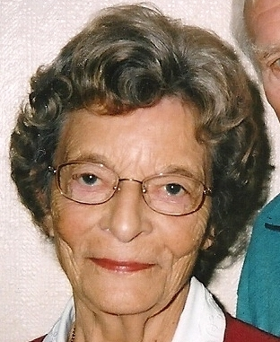

Muriel Alice Parker (née Standing) cAug 1921 - 2013
[ Home ] | [ Calendar ] | [ Surnames Index ] | [ Errors ] | [ Family History ]The child of William Standing (a laundry man) and Eliza Parr, Muriel Standing, the fourth cousin once-removed on the father's side of Nigel Horne, was born in Romford, Essex, England c. Aug 19211,2. She married Leslie E J Parker in Ilford, Essex, England around Nov 19453 (Oct/Nov/Dec).
She died on 30 Jan 2013.
Parents
- William Ernest was born on 12 Aug 1878
- Eliza Mary was born on 19 May 1885
Citations
- England & Wales births 1837-2006 - Findmypast
- England & Wales, Birth Index: 1916-2005 Online publication - Provo, UT, USA: The Generations Network, Inc., 2008.Original data - General Register Office. England and Wales Civil Registration Indexes. London, England: General Register Office. © Crown copyright. Published by permission of the Cont
- England & Wales, Marriage Index: 1916-2005 Online publication - Provo, UT, USA: The Generations Network, Inc., 2009.Original data - General Register Office. England and Wales Civil Registration Indexes. London, England: General Register Office. © Crown copyright. Published by permission of the Cont
Media
Murien Alice Standing

England & Wales births 1837-2006 - BMD/B/1921/3/AZ/001429/011
England & Wales marriages 1837-2008 - BMD/M/1945/4/AZ/001390/006
Family Tree

Map
Generated by ged2site. Last updated on Jul 3, 2024
Known Issues
Parent William is listed in the residence for 1925, but this child is not
Death date (30 Jan 2013) has no citations
Date of death is known, but not place